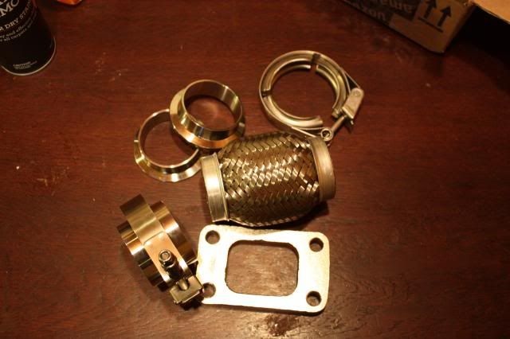

-
That's not where the flex piping should be, it should be close to where the whole assembly moves away from the body, meaning after the turbo… unless you plan to mount the turbo to the body and have the engine flex away from it -
The Turbo is going to solid mounted to the engine block, right before the turbo flange there will be another flexi bellows, This means that the turbo's weight will NOT be pulling on any of the pipework. Its not stainless so the crack inducing expansion wont be as extreme either.
The pipework will be able to expand and contract naturally with no weight hanging off it. There is also going to be a support at the 2-1 collector.
Feel Free to post up a diagram of how you would do it though, I'm definitely open to idea's
Its not an easy build, and go easy on me I'm still working this stuff out as i go.85 Turbo Slick Top
__________________________________________________ _____ -
The pipes will crack with no flex joins there..Straya, +61 -
this is a lot like the design I intend to do. i'm liking this.
except mine will go forward on the driver side.
are you trying to keep A/C as well? -
AC is Long gone, after doing some sketches and looking at photo's Foward on the drivers side might actually result in the least amount of piping and the easiest way of mounting it.
I suppose now that i have got this far, there is not much point making it worse on purpose by mounting it so low down.85 Turbo Slick Top
__________________________________________________ _____ -
i don't think you'd be making anything worse. it's a matter of fitment at this point. if you can deal with the fitment of the turbo being down low, and you can do a laaaaaarge turbine outlet pipe because you don't have a steering shaft there… i think it would be good to continue on your path.
if you mount it forward on the driver side, you will lose even more of the equality between the two sides, because there's going to be a long connector pipe going from pass side around back and meeting up with the turbo flange. so thats one reason why your current goal and setup might fare better for you. -
I've got to see how these turn out, so far, they are beautiful. Fantastic work!"Understeer is when you hit the wall with the front of the car. Oversteer is when you hit the wall with the rear of the car. Horsepower is how fast you hit the wall. Torque is how far you take the wall with you…"
-'68 Datsun 1600 Roadster
Build Thread: http://community.ratsun.net/topic/21…-build-thread/
-'85 300zx Turbo
Build Thread: http://z31performance.com/showthread…)build-thread! -
Reminds me a lot of the IMSA manifolds, what I've been able to see of them anyways.- VG30DET (HE341) 86 300ZX - 1982 280ZX Turbo - Headered NA 1986 300ZX 2+2 - 2000 Xterra - -
There was a you tube video posted of an IMSA engine /manifolds running in a sand rail, that vid showed the headers pretty good. The sound was wild too.85 Turbo Slick Top
__________________________________________________ _____ -
85 Turbo Slick Top
__________________________________________________ _____ -
I don't think those are the actual IMSA manifolds, as the IMSA engine was intercooled and the turbos were actually low-mounted.james;345212 wrote: There was a you tube video posted of an IMSA engine /manifolds running in a sand rail, that vid showed the headers pretty good. The sound was wild too.- VG30DET (HE341) 86 300ZX - 1982 280ZX Turbo - Headered NA 1986 300ZX 2+2 - 2000 Xterra - -
Ah , Noob moment, The sound is inspiring to me anyway. Either way, his fabricated manifolds are still a work of functional art, as is his whole engine setup there.michaelp;345230 wrote: I don't think those are the actual IMSA manifolds, as the IMSA engine was intercooled and the turbos were actually low-mounted.85 Turbo Slick Top
__________________________________________________ _____ -
I recommend going with TWO flex bellows. one on each of your y pipe runners then solid mount to the block as you had planned. Cant wait to see how this turns out. Very nice work. Not to be stereotypical but NZ tuning rarely disappoints. I look up to you guys over there!james;345051 wrote: The Turbo is going to solid mounted to the engine block, right before the turbo flange there will be another flexi bellows, This means that the turbo's weight will NOT be pulling on any of the pipework. Its not stainless so the crack inducing expansion wont be as extreme either.
The pipework will be able to expand and contract naturally with no weight hanging off it. There is also going to be a support at the 2-1 collector.
Feel Free to post up a diagram of how you would do it though, I'm definitely open to idea's
Its not an easy build, and go easy on me I'm still working this stuff out as i go.vg30'd s13 in progress. Shocks. Pegs. Lucky. -
Got a little Package from my Friends at ASCO,
Before anybody asks I only ordered one Bellows, it was my own fault for not checking that i actually had room for 2 of them. No big Deal. Now i have an extra good excuse to get a Because Race car shirt or something.
With more parts on hand I can have another fit up on the bench, then i need to find some time to strip down the manifolds and turbo on the car so I can do a proper on Vehicle test fit.
85 Turbo Slick Top
__________________________________________________ _____ -
Good to see everything made it there! Sorry about the jank t3 flange, I couldn't find my 3d profiled ones ANYWHERE!!! If i find them though I will send it with the second bellows. lol!"Its the s12's sexy over weight step daughter, the z31"

Copyright © 2006–. All rights reserved. Privacy Policy